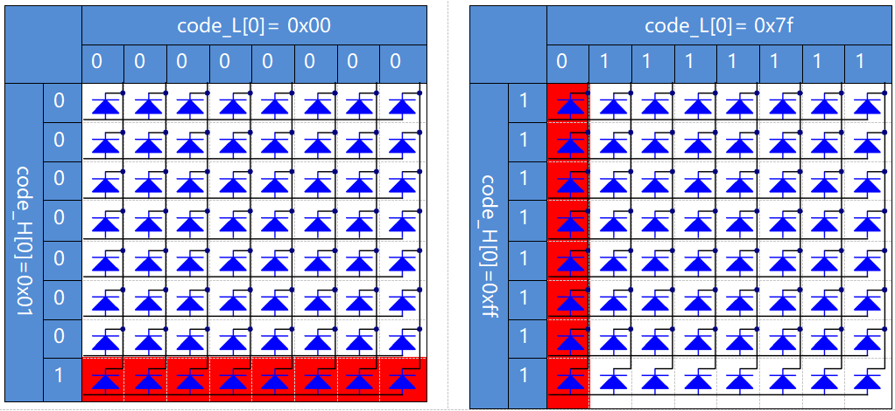

Note
Bonjour et bienvenue dans la communauté des passionnés de SunFounder Raspberry Pi, Arduino et ESP32 sur Facebook ! Plongez plus profondément dans Raspberry Pi, Arduino et ESP32 avec d’autres passionnés.
Pourquoi nous rejoindre ?
Support d’experts : Résolvez les problèmes post-vente et les défis techniques grâce à l’aide de notre communauté et de notre équipe.
Apprenez et partagez : Échangez des astuces et des tutoriels pour améliorer vos compétences.
Aperçus exclusifs : Accédez en avant-première aux annonces de nouveaux produits et aux avant-goûts.
Réductions spéciales : Profitez de réductions exclusives sur nos derniers produits.
Promotions festives et concours : Participez à des concours et promotions de fêtes.
👉 Prêt à explorer et créer avec nous ? Cliquez sur [Ici] et rejoignez-nous dès aujourd’hui !
1.1.6 LED Dot Matrix
Introduction
Comme son nom l’indique, une matrice à points LED est un ensemble de LED organisées en matrice. L’allumage et l’extinction des LED permettent de former différents caractères et motifs.
Composants

Principe
Matrice à points LED
En général, une matrice à points LED peut être classée en deux types : cathode commune (CC) et anode commune (CA). Elles se ressemblent beaucoup, mais diffèrent à l’intérieur. Vous pouvez les distinguer en les testant. Une matrice CA est utilisée dans ce kit, vous verrez l’étiquette 788BS sur le côté.
Voyez l’image ci-dessous. Les broches sont disposées aux deux extrémités à l’arrière. Prenez le côté de l’étiquette comme référence : les broches de cette extrémité sont numérotées de 1 à 8, et celles de l’autre extrémité de 9 à 16.
Vue externe :

Les figures ci-dessous montrent leur structure interne. Vous pouvez voir que dans une matrice à points LED CA, les lignes (ROW) représentent l’anode des LED, et les colonnes (COL) la cathode ; pour une matrice CC, c’est l’inverse. Une chose en commun : pour les deux types, les broches 13, 3, 4, 10, 6, 11, 15 et 16 sont toutes reliées aux colonnes (COL), tandis que les broches 9, 14, 8, 12, 1, 7, 2 et 5 sont reliées aux lignes (ROW). Si vous voulez allumer la première LED dans le coin supérieur gauche, pour une matrice CA, il suffit de régler la broche 9 sur High et la broche 13 sur Low, et pour une matrice CC, il faut régler la broche 13 sur High et la broche 9 sur Low. Si vous souhaitez allumer toute la première colonne, pour la matrice CA, réglez la broche 13 sur Low et les broches des lignes (ROW) 9, 14, 8, 12, 1, 7, 2 et 5 sur High, tandis que pour la matrice CC, réglez la broche 13 sur High et les lignes sur Low. Référez-vous aux figures suivantes pour une meilleure compréhension.
Vue interne :

Numérotation des broches correspondant aux lignes et colonnes ci-dessus :
COL |
1 |
2 |
3 |
4 |
5 |
6 |
7 |
8 |
Pin No. |
13 |
3 |
4 |
10 |
6 |
11 |
15 |
16 |
ROW |
1 |
2 |
3 |
4 |
5 |
6 |
7 |
8 |
Pin No. |
9 |
14 |
8 |
12 |
1 |
7 |
2 |
5 |
De plus, deux puces 74HC595 sont utilisées ici. L’une sert à contrôler les lignes de la matrice à points LED, tandis que l’autre contrôle les colonnes.
Schéma de câblage
T-Board Name |
physical |
wiringPi |
BCM |
GPIO17 |
Pin 11 |
0 |
17 |
GPIO18 |
Pin 12 |
1 |
18 |
GPIO27 |
Pin 13 |
2 |
27 |
{kind=link}
Procédures expérimentales
Étape 1 : Construisez le circuit. Comme le câblage est complexe, procédons étape par étape. Insérez d’abord le T-Cobbler, la matrice à points LED et les deux puces 74HC595 dans la plaque de prototypage. Connectez le 3,3 V et la masse (GND) du T-Cobbler aux trous sur les deux côtés de la plaque, puis reliez les broches 16 et 10 des deux puces 74HC595 à VCC, les broches 13 et 8 à GND.
Note
Dans l’image Fritzing ci-dessus, le côté avec l’étiquette est en bas.

Étape 2 : Reliez la broche 11 des deux puces 74HC595 ensemble, puis à GPIO27 ; ensuite, la broche 12 des deux puces, à GPIO18 ; enfin, la broche 14 de la puce 74HC595 de gauche à GPIO17 et la broche 9 à la broche 14 de la seconde puce 74HC595.

Étape 3 : La puce 74HC595 de droite contrôle les colonnes de la matrice à points LED. Consultez le tableau ci-dessous pour la correspondance. Ainsi, les broches Q0-Q7 de la puce 74HC595 sont reliées aux broches 13, 3, 4, 10, 6, 11, 15 et 16 respectivement.
74HC595 |
Q0 |
Q1 |
Q2 |
Q3 |
Q4 |
Q5 |
Q6 |
Q7 |
LED Dot Matrix |
13 |
3 |
4 |
10 |
6 |
11 |
15 |
16 |

Étape 4 : Connectez maintenant les lignes (ROW) de la matrice à points LED. La puce 74HC595 de gauche contrôle les lignes de la matrice à points LED. Le tableau ci-dessous montre la correspondance. On peut voir que les broches Q0-Q7 de la puce 74HC595 de gauche sont reliées aux broches 9, 14, 8, 12, 1, 7, 2 et 5 respectivement.
74HC595 |
Q0 |
Q1 |
Q2 |
Q3 |
Q4 |
Q5 |
Q6 |
Q7 |
LED Dot Matrix |
9 |
14 |
8 |
12 |
1 |
7 |
2 |
5 |

Pour les utilisateurs du langage C
Étape 5 : Accédez au dossier du code.
cd ~/davinci-kit-for-raspberry-pi/c/1.1.6/
Étape 6 : Compilez.
gcc 1.1.6_LedMatrix.c -lwiringPi
Étape 7 : Exécutez.
sudo ./a.out
Après avoir exécuté le code, la matrice de LED s’allume et s’éteint ligne par ligne et colonne par colonne.
Note
Si cela ne fonctionne pas après l’exécution, ou si une erreur du type "wiringPi.h: No such file or directory" est affichée, veuillez consulter C code is not working?.
Code
#include <wiringPi.h>
#include <stdio.h>
#define SDI 0 //entrée des données série
#define RCLK 1 //entrée de l'horloge mémoire (STCP)
#define SRCLK 2 //entrée de l'horloge du registre de décalage (SHCP)
unsigned char code_H[20] = {0x01,0xff,0x80,0xff,0x01,0x02,0x04,0x08,0x10,0x20,0x40,0x80,0xff,0xff,0xff,0xff,0xff,0xff,0xff,0xff};
unsigned char code_L[20] = {0x00,0x7f,0x00,0xfe,0x00,0x00,0x00,0x00,0x00,0x00,0x00,0x00,0xfe,0xfd,0xfb,0xf7,0xef,0xdf,0xbf,0x7f};
void init(void){
pinMode(SDI, OUTPUT);
pinMode(RCLK, OUTPUT);
pinMode(SRCLK, OUTPUT);
digitalWrite(SDI, 0);
digitalWrite(RCLK, 0);
digitalWrite(SRCLK, 0);
}
void hc595_in(unsigned char dat){
int i;
for(i=0;i<8;i++){
digitalWrite(SDI, 0x80 & (dat << i));
digitalWrite(SRCLK, 1);
delay(1);
digitalWrite(SRCLK, 0);
}
}
void hc595_out(){
digitalWrite(RCLK, 1);
delay(1);
digitalWrite(RCLK, 0);
}
int main(void){
int i;
if(wiringPiSetup() == -1){ //si l'initialisation de wiring échoue, afficher un message à l'écran
printf("setup wiringPi failed !");
return 1;
}
init();
while(1){
for(i=0;i<sizeof(code_H);i++){
hc595_in(code_L[i]);
hc595_in(code_H[i]);
hc595_out();
delay(100);
}
for(i=sizeof(code_H);i>=0;i--){
hc595_in(code_L[i]);
hc595_in(code_H[i]);
hc595_out();
delay(100);
}
}
return 0;
}
Explication du code
unsigned char code_H[20] = {0x01,0xff,0x80,0xff,0x01,0x02,0x04,0x08,0x10,0x20,0x40,0x80,0xff,0xff,0xff,0xff,0xff,0xff,0xff,0xff};
unsigned char code_L[20] = {0x00,0x7f,0x00,0xfe,0x00,0x00,0x00,0x00,0x00,0x00,0x00,0x00,0xfe,0xfd,0xfb,0xf7,0xef,0xdf,0xbf,0x7f};
Le tableau code_H représente les éléments des lignes de la matrice de LED, et le tableau code_L représente les éléments des colonnes. Lors de l’affichage des caractères, un élément de ligne et un élément de colonne sont récupérés et attribués aux deux puces HC595 respectivement. Ainsi, un motif s’affiche sur la matrice de LED. Prenons comme exemple le premier élément de code_H, 0x01, et le premier élément de code_L, 0x00.
0x01 converti en binaire donne 00000001 ; 0x00 converti en binaire donne 0000 0000.
Dans ce kit, une matrice de LED à anode commune est utilisée, donc seules les huit LEDs de la huitième ligne s’allument. Lorsque les conditions où code_H est 0xff et code_L est 0x7f sont remplies simultanément, ces 8 LEDs dans la première colonne s’allument.
void hc595_in(unsigned char dat){
int i;
for(i=0;i<8;i++){
digitalWrite(SDI, 0x80 & (dat << i));
digitalWrite(SRCLK, 1);
delay(1);
digitalWrite(SRCLK, 0);
Cette fonction écrit la valeur de dat dans la broche SDI du HC595, bit par bit. La valeur initiale de SRCLK est fixée à 0, puis elle passe à 1 pour générer une impulsion de front montant, permettant ainsi de transférer les données de SDI(DS) au registre à décalage.
void hc595_out(){
digitalWrite(RCLK, 1);
delay(1);
digitalWrite(RCLK, 0);
La valeur initiale de RCLK est fixée à 0, puis elle passe à 1 pour générer un front montant, permettant ainsi de transférer les données du registre à décalage au registre de stockage.
while(1){
for(i=0;i<sizeof(code_H);i++){
hc595_in(code_L[i]);
hc595_in(code_H[i]);
hc595_out();
delay(100);
}
}
Dans cette boucle, les 20 éléments des deux tableaux, code_L et code_H, sont chargés un par un dans les deux puces 74HC595. Ensuite, la fonction hc595_out() est appelée pour transférer les données du registre à décalage au registre de stockage.
Pour les utilisateurs de Python
Étape 5 : Accédez au dossier du code.
cd ~/davinci-kit-for-raspberry-pi/python
Étape 6 : Exécutez le code.
sudo python3 1.1.6_LedMatrix.py
Après l’exécution du code, la matrice de LED s’allume et s’éteint ligne par ligne et colonne par colonne.
Code
Note
Vous pouvez Modifier/Réinitialiser/Copier/Exécuter/Arrêter le code ci-dessous. Mais avant cela, vous devez vous rendre au chemin source du code comme davinci-kit-for-raspberry-pi/python.
import RPi.GPIO as GPIO
import time
SDI = 17
RCLK = 18
SRCLK = 27
# Nous utilisons une matrice BX, ROW pour l'anode et COL pour la cathode
# ROW ++++
code_H = [0x01,0xff,0x80,0xff,0x01,0x02,0x04,0x08,0x10,0x20,0x40,0x80,0xff,0xff,0xff,0xff,0xff,0xff,0xff,0xff]
# COL ----
code_L = [0x00,0x7f,0x00,0xfe,0x00,0x00,0x00,0x00,0x00,0x00,0x00,0x00,0xfe,0xfd,0xfb,0xf7,0xef,0xdf,0xbf,0x7f]
def setup():
GPIO.setmode(GPIO.BCM) # Numérotation des GPIO par leur position BCM
GPIO.setup(SDI, GPIO.OUT)
GPIO.setup(RCLK, GPIO.OUT)
GPIO.setup(SRCLK, GPIO.OUT)
GPIO.output(SDI, GPIO.LOW)
GPIO.output(RCLK, GPIO.LOW)
GPIO.output(SRCLK, GPIO.LOW)
# Transfère les données vers le 74HC595
def hc595_shift(dat):
for bit in range(0, 8):
GPIO.output(SDI, 0x80 & (dat << bit))
GPIO.output(SRCLK, GPIO.HIGH)
time.sleep(0.001)
GPIO.output(SRCLK, GPIO.LOW)
GPIO.output(RCLK, GPIO.HIGH)
time.sleep(0.001)
GPIO.output(RCLK, GPIO.LOW)
def main():
while True:
for i in range(0, len(code_H)):
hc595_shift(code_L[i])
hc595_shift(code_H[i])
time.sleep(0.1)
for i in range(len(code_H)-1, -1, -1):
hc595_shift(code_L[i])
hc595_shift(code_H[i])
time.sleep(0.1)
def destroy():
GPIO.cleanup()
if __name__ == '__main__':
setup()
try:
main()
except KeyboardInterrupt:
destroy()
Explication du code
code_H = [0x01,0xff,0x80,0xff,0x01,0x02,0x04,0x08,0x10,0x20,0x40,0x80,0xff,0xff,0xff,0xff,0xff,0xff,0xff,0xff]
code_L = [0x00,0x7f,0x00,0xfe,0x00,0x00,0x00,0x00,0x00,0x00,0x00,0x00,0xfe,0xfd,0xfb,0xf7,0xef,0xdf,0xbf,0x7f]
Le tableau code_H représente les éléments des lignes de la matrice, et le tableau code_L ceux des colonnes. Lorsqu’un caractère est affiché, un élément de ligne et un élément de colonne sont récupérés et attribués respectivement aux deux puces HC595, ce qui permet d’afficher un motif sur la matrice de LED. Prenons l’exemple du premier nombre de code_H, 0x01, et du premier nombre de code_L, 0x00.
0x01 converti en binaire devient 00000001 ; 0x00 converti en binaire devient 0000 0000.
Dans ce kit, une matrice de LED à anode commune est utilisée, donc seules les huit LEDs de la huitième ligne s’allument. Lorsque code_H vaut 0xff et code_L vaut 0x7f, les 8 LEDs de la première colonne s’allument.
for i in range(0, len(code_H)):
hc595_shift(code_L[i])
hc595_shift(code_H[i])
Dans cette boucle, les 20 éléments des deux tableaux, code_L et code_H, sont envoyés un par un à la puce HC595.
Note
Si vous souhaitez afficher des caractères sur la matrice de LED, veuillez vous référer au code Python disponible ici : https://github.com/sunfounder/SunFounder_Dot_Matrix.